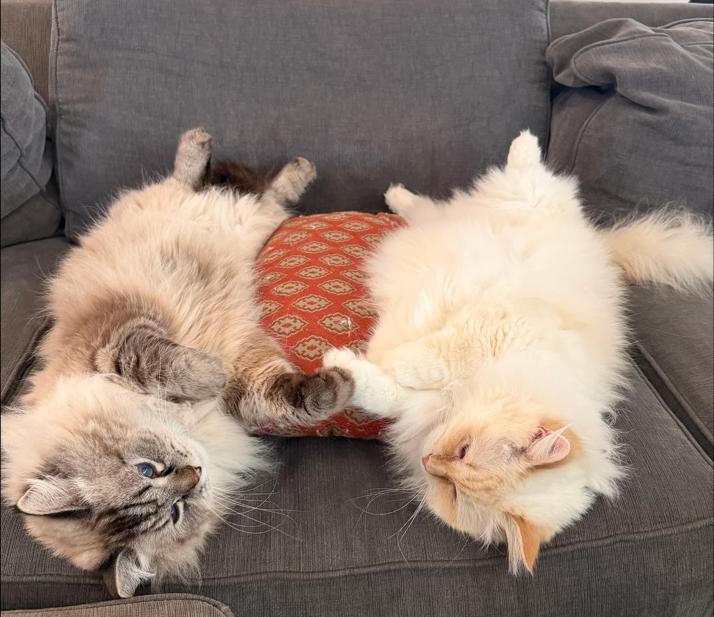
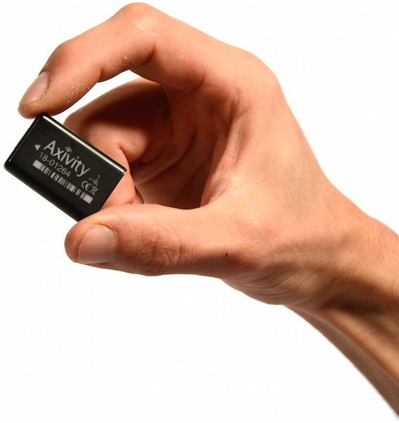
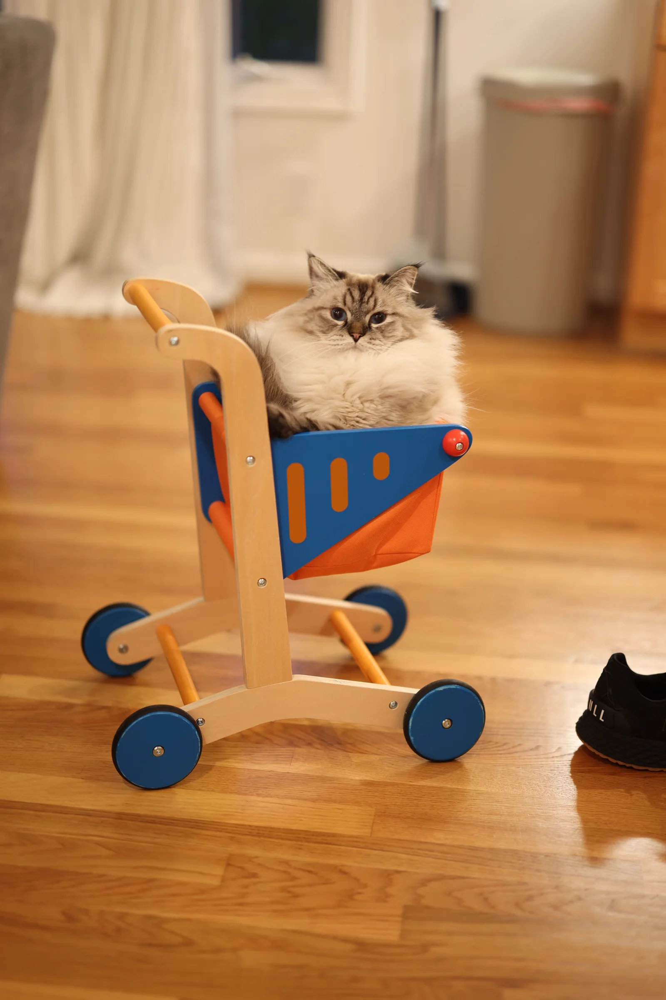
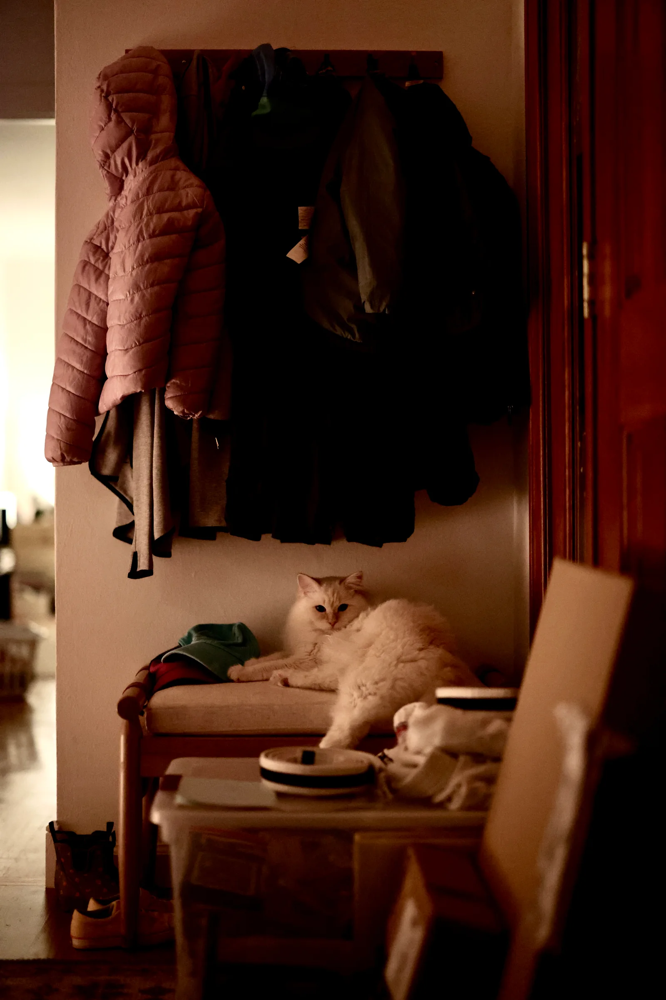

Peach is busier before dawn.
From 4–7 a.m., Peach records about 30% more movement than Toast. The pattern holds on five of the six days.
What do my cats actually do all day?
Toast and Peach are very good at looking busy doing nothing. I made them a pair of activity-tracking collars to find out what happens between naps.
Follow the data
26%
More average movement from Toast
70%
Of each cat’s daytime rest overlaps
~6h
Of quiet rest in each eight-hour night
Michael, Michael Todd, Micky, Muffy, Church, Gypsy, Slash, Saber. And now, Toast and Peach.
Toast also answers to Toaster, Toast Malone, Cinnamon Toast Crunch, and Toastie the Mostie. Or, more accurately, is occasionally addressed by those names.
Toast and Peach sleep a lot. They’re also probably the fattest cats I’ve had. So I got curious: just how active are they, really?
I made some collars using the Axivity AX3, a tiny accelerometer that can log movement for a couple of weeks before I download the data. Then I let the cats get on with being cats.

Two collar-mounted AX3s. Three axes of movement, sampled 25 times a second. About a week later: 30.2 million readings.
Across six complete days, Toast recorded 26% more average collar movement. The difference is 32% during the day and just 3% at night. Their nighttime averages are almost the same.
Loading the recording…
Movement is average acceleration variability, in mg. It includes head movements and grooming as well as getting up and going somewhere.
From 4–7 a.m., Peach records about 30% more movement than Toast. The pattern holds on five of the six days.
From 10 p.m. to midnight, Toast records 55% more movement. That also holds on five of six days. By 7–9 a.m., they’re nearly tied.
Toast accumulates about 84 extra minutes of movement each day. During those active intervals, average movement intensity is only about 7% higher.

A surprisingly rigorous investigation into doing very little.
The collars stayed on continuously. The cats kept their usual routines.

Both spend about three-quarters of the night in sustained quiet rest, compared with about two-fifths of the day. Daytime is twice as long, so it still adds up to slightly more resting hours.
Here, “sleep-like rest” means sustained stillness. Quiet wakefulness can count too.
10 p.m.–6 a.m. · 8 hours
6 a.m.–10 p.m. · 16 hours
Peach 12.4 hToast 12.7 h
Estimates, not a sleep competition.About 70% of each cat’s daytime rest happens while the other is resting too: an average of 4.6 shared hours a day. Most of that overlap falls between 11 a.m. and 6 p.m.
Loading the rest intervals…
Totals at right show shared rest across all 24 hours; the 70% figure above refers to daytime only.
Each cat has about two additional hours of daytime rest while the other isn’t classified as resting. Shared timing doesn’t mean they’re sleeping in the same place.
Pairing different dates at the same clock times gives 3.7 shared hours, compared with 4.6 on matching dates. That’s about 54 extra minutes of overlap on the actual day.
Toast moved more on every complete day. But September 4 stands out for Peach: average movement was 21% below the other days, and evening movement was 52% lower. The next day was back in the usual range.
Average collar movement in mg. The recording shows the change, but doesn’t identify its cause.
Between midnight and 4 a.m., about 90% of Peach’s time and 94% of Toast’s qualifies as sustained quiet rest.
Their movement lines up best with no time delay, whether measured in five-, fifteen-, or thirty-minute blocks. These summaries don’t identify a consistent activity leader.
Toast is more active than Peach. But published studies use different sensors and definitions of activity, so these numbers can’t rank either cat against most cats.
What the data can’t tell us ↗The files cover August 30–September 6, 2026. For a fair comparison, I used the six complete calendar days both collars recorded: August 31–September 5.
I summarized acceleration changes in five-second intervals, using all three axes. This reduces the effect of static collar orientation. Higher values mean more variable collar movement; they aren’t steps, calories, or distance.
Toast’s recording has a 77-second interruption. The 80 seconds of five-second bins overlapping it were excluded from both cats. The device clocks are treated as local Pacific time.
An interval qualifies as quiet when movement is below a shared cutoff and the collar’s orientation stays steady. Rest periods need to last at least five minutes; brief interruptions can connect a period but don’t add to its rest time.
Night is 10 p.m.–6 a.m. Day is 6 a.m.–10 p.m. Comparing percentages matters because those windows are different lengths.
Not certain enough to declare a winner. Across plausible stillness cutoffs and five- or ten-minute minimum rest periods, Peach’s estimated rest ranges from 12.0–13.3 hours per day and Toast’s from 12.2–13.0. The ranking changes with the cutoff.
Totals use a five-minute minimum period. These are method sensitivity ranges, not confidence intervals or bounds on actual sleep.
Quiet wakefulness can look like sleep, and movement during real sleep can break a rest period. We don’t have labeled video for the recording. This is a description of sleep-like rest, not a validated feline sleep measurement.
Movement variability is 1,000 × √(var(x) + var(y) + var(z)), calculated within each five-second interval from acceleration in g. The shared rest cutoff is 20 mg, with less than 5° of orientation change and at least 90% quiet intervals in a qualifying period. Missing data never connects rest periods.
Their morning and evening activity peaks resemble patterns reported in other housed cats. But age and outdoor access affect activity, and a fair population comparison needs the same measurement method. A week can reveal routines, not permanent personality traits. These recordings can’t identify specific behaviors, diagnose health, measure weight loss, or establish why the cats’ schedules align.